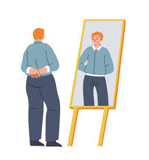

Wat ik heb geleerd
Tijdens deze opdracht hebben we geleerd dat klimaatverandering een complex onderwerp is. Het gaat niet alleen over warm weer, maar over natuurkundige processen zoals straling, warmte, warmtetransport, verdamping, convectie en het broeikaseffect. We begrijpen nu beter hoe de atmosfeer werkt en waarom extra broeikasgassen zorgen voor opwarming van de aarde.
Ik vond het interessant dat klimaatverandering invloed heeft op zowel de levende als de levenloze natuur. Veranderingen in temperatuur, neerslag en leefgebieden hebben gevolgen voor planten en dieren. Daardoor worden soorten soms gedwongen tot adaptatie. Op lange termijn kan dit zelfs samenhangen met evolutie.
Wat ik heb toegepast in mijn website
In onze website hebben we geprobeerd om de theorie duidelijk en stap voor stap uit te leggen. We hebben meerdere begrippen uit de lessen verwerkt, zoals atmosfeer, waterdamp, koolstofdioxide, albedo-effect, reflectie, verstrooiing, fossiele brandstoffen, verbranding, fotosynthese en duurzame energie. Daardoor is onze website niet alleen een samenvatting, maar ook een toepassing van de kennis uit de lessen.

Wat dit betekent voor mijn dagelijks leven
Door deze opdracht zijn we bewuster gaan nadenken over onze eigen ecologische voetafdrukken. We zien nu beter dat keuzes rondom energie, vervoer en consumptie invloed hebben op het klimaat. In de toekomst willen we zuiniger omgaan met energie, minder verspillen en vaker kiezen voor duurzamere oplossingen.
Deze opdracht heeft mij dus niet alleen meer kennis gegeven, maar ook meer bewustwording. Dat vind ik belangrijk, omdat klimaatverandering een probleem is waarbij kennis en gedrag allebei een rol spelen.